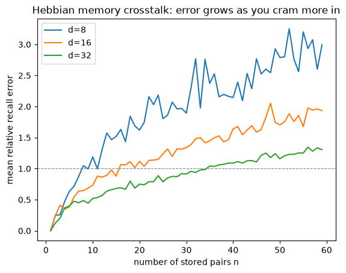
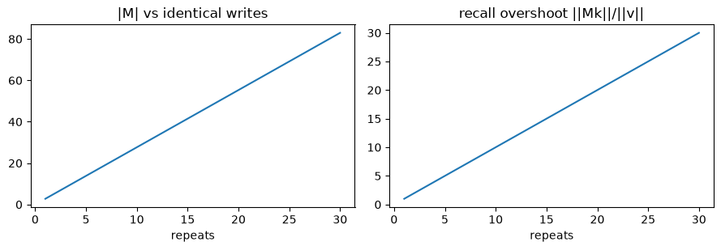

import numpy as np
import matplotlib.pyplot as plt
rng = np.random.default_rng(0)
d = 16 # the memory is a d x d matrix
def normalize(x):
return x / np.linalg.norm(x, axis=-1, keepdims=True)
def hebbian_write(M, k, v, alpha=1.0, eta=1.0):
"""M <- alpha*M + eta * v k^T (add an outer product)."""
return alpha * M + eta * np.outer(v, k)
def read(M, q):
"""y = M q."""
return M @ qM1 — Associative memory & the Hebbian write
The question: what is the single primitive everything else is built from?
First module of the foundations spine. Runs on CPU in seconds; numpy only. 
Run it top to bottom, then start changing things (d, the number of pairs, seed, beta).
Prerequisite math — orthonormal keys and effective rank (memory capacity) are covered with runnable demos in the linear-algebra primer §1, §3.
Objective
After this module you should be able to:
- State what an associative memory is as an operator (keys → values), and why “the operator is the memory; fitting it is learning.”
- Derive the Hebbian write \(\mathcal{M}_t = \alpha_t\mathcal{M}_{t-1} + \eta_t\,\mathbf{v}_t\mathbf{k}_t^\top\) from a dot-product objective, and read/write a memory by hand.
- Explain its two weaknesses — interference (capacity) and state-blindness — and which later module fixes each.
- Recognize the same recurrence inside real code (linear attention / the HOPE fast-memory with the correction term switched off).
Why it exists (the role it plays)
M1 is the floor, not a fix — it’s where the chain starts. What it sets up (and later modules repair): we want a memory that stores many key→value pairs in a fixed-size object, recalls them, and is updated online (one token at a time) with no backprop-through-time. The simplest such object is one matrix you add outer products into. Everything after M1 is “the same idea, but the write is smarter."
Core idea
A memory is a matrix \(\mathcal{M}\). Read with a matrix–vector product \(\mathbf{y}=\mathcal{M}\mathbf{q}\). Write the pair \((\mathbf{k},\mathbf{v})\) by adding the outer product \(\mathbf{v}\mathbf{k}^\top\) — because that is one gradient step on the dot-product objective \(-\langle\mathcal{M}\mathbf{k},\mathbf{v}\rangle\). Adding an outer product is the Hebbian rule (“fire together, wire together”), and it is identical to the unnormalized linear-attention recurrence.
So “linear attention” and “Hebbian associative memory” are the same object under two names — the through-line we cash out in §4 and again at M3.
Where the primitive comes from. Hebb stated the rule in prose in The Organization of Behavior (1949) and wrote no formula for it. The matrix form this course actually runs on — store \(\mathcal{M}=\sum_i\mathbf{v}_i\mathbf{k}_i^\top\), read with \(\mathcal{M}\mathbf{q}\) — is the correlation matrix memory, arrived at independently in 1972 by Kohonen (IEEE Trans. Computers), Anderson (Mathematical Biosciences), and Nakano (IEEE Trans. SMC). The idea is Hebb’s; the algebra is theirs. Fifty years on it is still the write in the recurrence, unchanged — which is why M1 is the floor and not a fix.
Reading
- Paper grounding: Nested Learning §3.1 (Def 1, associative memory) and §5 (Hebbian / linear-attention recurrence).
- If the outer-product-as-rank-one-write feels shaky, the one fact to hold is that a matrix product is a sum of outer products — \(AB=\sum_i\mathbf{a}_i\mathbf{b}_i^\top\) over the columns \(\mathbf{a}_i\) of \(A\) and the rows \(\mathbf{b}_i^\top\) of \(B\) — so adding \(\mathbf{v}\mathbf{k}^\top\) adds exactly one rank-one term to the memory.
1. The object: one matrix, two operations
A memory is a single matrix M (shape \(d_v \times d_k\)). Two operations:
- Read:
y = M @ q— query in, value out (\(\mathbf{y}=\mathcal{M}\mathbf{q}\)). - Write the pair
(k, v):M += v k^T— add the outer product.
Pure linear algebra, so numpy is all we need (torch arrives at M4, when we run the actual repo tensors).
Convention. This notebook uses column vectors: \(\mathbf{y}=\mathcal{M}\mathbf{q}\), write \(\mathcal{M}\mathrel{+}=\mathbf{v}\mathbf{k}^\top\). The reference code below (
train_hope.py→SelfModifyingLayer) uses the transposed row formy = q @ M,M += k.T @ v. Same object, transposed — don’t let it trip you.
2. Store a few pairs, then recall them
Write n random \((\mathbf{k},\mathbf{v})\) pairs into one matrix, then query each key and measure recall error. With unit-norm keys,
\[\mathcal{M}\mathbf{k}_i = \mathbf{v}_i + \sum_{j\neq i}\mathbf{v}_j\,(\mathbf{k}_j\!\cdot\!\mathbf{k}_i),\]
so the second term is crosstalk from every non-orthogonal key (full story in the callout at the end of this section). Watch the error grow as you store more.
def mean_recall_error(num_pairs, d=d, seed=0):
r = np.random.default_rng(seed)
M = np.zeros((d, d))
keys = normalize(r.standard_normal((num_pairs, d)))
vals = r.standard_normal((num_pairs, d))
for k, v in zip(keys, vals):
M = hebbian_write(M, k, v)
errs = [np.linalg.norm(read(M, k) - v) / np.linalg.norm(v) for k, v in zip(keys, vals)]
return float(np.mean(errs))
for n in (2, 8, 40):
print(f"{n:3d} pairs -> mean relative recall error = {mean_recall_error(n):.3f}") 2 pairs -> mean relative recall error = 0.243
8 pairs -> mean relative recall error = 0.645
40 pairs -> mean relative recall error = 1.639Play: the capacity curve
Sweep the number of stored pairs and plot recall error. Try changing d — capacity scales with matrix size; around \(n\approx d\) the memory saturates.
ns = list(range(1, 60))
for dd in (8, 16, 32):
errs = [mean_recall_error(n, d=dd) for n in ns]
plt.plot(ns, errs, label=f"d={dd}")
plt.axhline(1.0, ls="--", c="gray", lw=0.8)
plt.xlabel("number of stored pairs n"); plt.ylabel("mean relative recall error")
plt.title("Hebbian memory crosstalk: error grows as you cram more in")
plt.legend(); plt.show()
NoteQ: What is “crosstalk”?
Interference between stored associations — one stored pair leaking into the recall of another (term borrowed from telecom: signal bleeding across wires). With \(\mathcal{M}=\sum_j\mathbf{v}_j\mathbf{k}_j^\top\) and unit-norm keys, querying a stored key \(\mathbf{k}_i\):
\[\mathcal{M}\mathbf{k}_i = \underbrace{\mathbf{v}_i}_{\text{signal}} + \underbrace{\sum_{j\neq i}\mathbf{v}_j\,(\mathbf{k}_j\!\cdot\!\mathbf{k}_i)}_{\text{crosstalk}}.\]
Every other stored value contaminates the read, weighted by how aligned its key is with the query. It vanishes when the other keys are orthogonal. Since only \(d\) orthogonal directions exist in \(\mathbb{R}^d\), clean recall holds for up to ~\(d\) keys; beyond that crosstalk is forced — the capacity limit. Random high-\(d\) keys are near-orthogonal (\(\mathbf{k}_j\!\cdot\!\mathbf{k}_i\approx\pm1/\sqrt d\)), so error grows with \(n\) and shrinks with \(d\) — the curve above. Test it: set keys = np.eye(d)[:num_pairs] (orthonormal) in mean_recall_error → error ≈ 0 until num_pairs = d, then it breaks.
3. State-blindness: the write ignores what M already knows
Write the same \((\mathbf{k},\mathbf{v})\) repeatedly. Hebbian has no error term, so it just keeps adding \(\mathbf{v}\mathbf{k}^\top\): after \(n\) writes, \(\mathcal{M}\mathbf{k}=n\,\mathbf{v}\). Recall overshoots linearly and \(\lVert\mathcal{M}\rVert\) blows up — the exact weakness the delta rule (M4) fixes.
k = normalize(rng.standard_normal(d))
v = rng.standard_normal(d)
norms, overshoots = [], []
reps = range(1, 31)
for n in reps:
M = np.zeros((d, d))
for _ in range(n):
M = hebbian_write(M, k, v)
norms.append(np.linalg.norm(M))
overshoots.append(np.linalg.norm(read(M, k)) / np.linalg.norm(v))
fig, ax = plt.subplots(1, 2, figsize=(9, 3.2))
ax[0].plot(list(reps), norms); ax[0].set_title("|M| vs identical writes"); ax[0].set_xlabel("repeats")
ax[1].plot(list(reps), overshoots); ax[1].set_title("recall overshoot ||Mk||/||v||"); ax[1].set_xlabel("repeats")
plt.tight_layout(); plt.show()
print("After n identical writes, Mk = n*v exactly. Hebbian never says 'I already know this'.")
After n identical writes, Mk = n*v exactly. Hebbian never says 'I already know this'.4. The hook to M4: delete one term to go from Hebbian to delta
HOPE’s real fast memory writes the prediction error instead of the raw value:
pred = M k # what M already recalls for k
error = v - pred # <-- the delta correction
M = alpha*M + beta * outer(error, k)Set pred = 0 (don’t subtract what you know) and you are back to Hebbian. Run the cell: with the error term, the second write is ~0 and \(\lVert\mathcal{M}\rVert\) stays bounded — compare to section 3. That single term - pred is the entire distance from M1 to M4. Play with beta.
def delta_write(M, k, v, alpha=1.0, beta=1.0):
pred = read(M, k) # M k (what M already recalls for k)
error = v - pred # the correction Hebbian lacks
return alpha * M + beta * np.outer(error, k)
k = normalize(rng.standard_normal(d))
v = rng.standard_normal(d)
print("repeat | Hebbian |M| | delta |M| | delta recall err")
Mh = np.zeros((d, d)); Md = np.zeros((d, d))
for n in range(1, 11):
Mh = hebbian_write(Mh, k, v)
Md = delta_write(Md, k, v, beta=0.8)
err = np.linalg.norm(read(Md, k) - v) / np.linalg.norm(v)
print(f" {n:2d} | {np.linalg.norm(Mh):7.2f} | {np.linalg.norm(Md):7.2f} | {err:.4f}")repeat | Hebbian |M| | delta |M| | delta recall err
1 | 4.02 | 3.21 | 0.2000
2 | 8.04 | 3.86 | 0.0400
3 | 12.06 | 3.99 | 0.0080
4 | 16.07 | 4.01 | 0.0016
5 | 20.09 | 4.02 | 0.0003
6 | 24.11 | 4.02 | 0.0001
7 | 28.13 | 4.02 | 0.0000
8 | 32.15 | 4.02 | 0.0000
9 | 36.17 | 4.02 | 0.0000
10 | 40.19 | 4.02 | 0.0000
NoteQ: What makes something “linear attention”? Is it the forget/retain gate?
No — forget/retain (\(\alpha\)) is a separate, optional dial; pure linear attention has \(\alpha=1\) (no gate). What makes it linear is using the raw dot product \(\mathbf{q}\cdot\mathbf{k}\) (or \(\phi(\mathbf{q})\cdot\phi(\mathbf{k})\)) as the similarity instead of softmax’s nonlinear \(\exp(\mathbf{q}\cdot\mathbf{k})\). Because the dot product is linear in \(\mathbf{q}\), the attention sum collapses into a matrix:
\[\text{out}_t = \sum_i (\mathbf{q}_t\!\cdot\!\mathbf{k}_i)\,\mathbf{v}_i = \Big(\sum_i\mathbf{v}_i\mathbf{k}_i^\top\Big)\mathbf{q}_t = \mathcal{M}_t\,\mathbf{q}_t,\qquad \mathcal{M}_t=\mathcal{M}_{t-1}+\mathbf{v}_t\mathbf{k}_t^\top.\]
So the Hebbian write is the linear-attention state update and the read \(\mathcal{M}_t\mathbf{q}_t\) is the attention output (Katharopoulos et al. 2020, “Transformers are RNNs”). Softmax’s \(\exp\) doesn’t factor, so it can’t collapse — you keep every token (KV cache, \(O(N^2)\)).
This is also why softmax attention is non-parametric (it keeps all the raw data — every key/value — like a kNN) while linear attention is parametric (it compresses history into fixed parameters \(\mathcal{M}\)), paying with the Q2 crosstalk.
Three independent dials the paper turns: similarity / objective (dot-product → Hebbian, \(L_2\) → delta), gate \(\alpha\) (none / constant / learned → linear-attn / RetNet / gated), optimizer (one step vs many). “Linear attention” = the similarity choice; forget/retain = the gate choice. Linear attention gets its full treatment at M3; the three dials get theirs at M7.
5. Backpropagation is an associative-memory write too
Prerequisite math — the chain rule and the matrix view (\(\partial\mathcal{L}/\partial W=\boldsymbol{\delta}\hat{\mathbf{x}}^\top\) — the formula this section turns into a memory write) are built from scratch, with runnable demos, in the backpropagation primer §3, §5.
The outer-product write isn’t only how a sequence memory learns — it’s how every weight matrix learns by gradient descent. Take one linear layer \(\mathbf{y}=W\mathbf{x}\) and any loss \(\mathcal{L}(\mathbf{y})\). The gradient w.r.t. \(W\) is an outer product — the same forced shape as the Hebbian write (callout below):
\[\frac{\partial\mathcal{L}}{\partial W}=\underbrace{\frac{\partial\mathcal{L}}{\partial\mathbf{y}}}_{\boldsymbol{\delta}\ =\ \text{output surprise}}\,\mathbf{x}^\top,\qquad\text{so one SGD step}\quad W\leftarrow W-\eta\,\boldsymbol{\delta}\mathbf{x}^\top = W+(-\eta\boldsymbol{\delta})\,\mathbf{x}^\top.\]
That is exactly the Hebbian write \(W\mathrel{+}=\mathbf{v}\mathbf{k}^\top\) with key \(=\mathbf{x}\) (the layer’s input) and value \(=-\eta\boldsymbol{\delta}\) (the negative error). So \(W\) is an associative memory, and training writes the association “input \(\mathbf{x}\to\) the direction that reduces its error.” The NL paper states it directly (§3.1, Eq. 8), naming \(\boldsymbol{\delta}=\nabla_{\mathbf{y}}\mathcal{L}\) the Local Surprise Signal:
\[W_{t+1}=W_t-\eta_{t+1}\,\nabla_W\mathcal{L}(W_t;\mathbf{x}_{t+1})=W_t-\eta_{t+1}\,\big(\nabla_{\mathbf{y}}\mathcal{L}\big)\otimes\mathbf{x}_{t+1},\]
“backpropagation can be viewed as an associative memory that maps each data sample to the error of its corresponding prediction.”
Every layer, not just one. In a deep net \(\partial\mathcal{L}/\partial W_\ell=\boldsymbol{\delta}_\ell\,\mathbf{x}_{\ell-1}^\top\), where \(\mathbf{x}_{\ell-1}\) is that layer’s input (the key) and \(\boldsymbol{\delta}_\ell\) is the backpropagated surprise at its output (the value). Backprop’s whole job is to produce the per-layer surprises \(\boldsymbol{\delta}_\ell\); the write into each weight matrix is the same rank-one outer product you’ve used all module.
One honest distinction. Unlike sections 1–4 — where we handed in \(\mathbf{v}\) — here the value \(\boldsymbol{\delta}\) is self-generated: it depends on the current \(W\), the downstream layers, and the target, so the memory computes the very value it stores. That self-referential twist is what makes backprop more than vanilla Hebbian (the NL paper is careful that “backprop \(\ne\) pure linear attention” for exactly this reason), and it is the thread M6 picks up — where the optimizer itself (momentum, Adam) turns out to be yet another associative memory, this time compressing the gradient stream.
NoteQ: Is the gradient an outer product because \(-\langle\mathcal{M}\mathbf{k},\mathbf{v}\rangle\) is a scalar \((\mathcal{M}\mathbf{k})\cdot\mathbf{v}\), and its gradient w.r.t. \(\mathcal{M}\) is \(\mathbf{v}\mathbf{k}^\top\)?
Yes — right idea, with one shape correction: it is \(\mathbf{v}\mathbf{k}^\top\) (outer product, \(d_v\times d_k\)), not \(\mathbf{v}^\top\mathbf{k}\) (a scalar). A gradient w.r.t. a matrix must have the same shape as the matrix. In indices:
\[\langle\mathcal{M}\mathbf{k},\mathbf{v}\rangle = \mathbf{v}^\top\mathcal{M}\mathbf{k} = \sum_{i,j} v_i\,\mathcal{M}_{ij}\,k_j \;\Rightarrow\; \frac{\partial}{\partial\mathcal{M}_{ij}} = v_i k_j \;\Rightarrow\; \nabla_{\mathcal{M}}\langle\mathcal{M}\mathbf{k},\mathbf{v}\rangle = \mathbf{v}\mathbf{k}^\top.\]
Shape check: \(\mathbf{v}\,(d_v\times1)\cdot\mathbf{k}^\top(1\times d_k)=d_v\times d_k\) = shape of \(\mathcal{M}\) ✓; \(\mathbf{v}^\top\mathbf{k}\) is a scalar ✗. So \(\mathcal{M}\mathrel{+}=\mathbf{v}\mathbf{k}^\top\) is exactly one gradient-ascent step on the alignment — the outer-product shape is forced. (This “gradient w.r.t. a matrix is an outer product” move recurs everywhere: backprop’s \(\partial\mathcal{L}/\partial W=\boldsymbol{\delta}\,\mathbf{x}^\top\), momentum, the delta rule.)
# A single linear layer y = W x learns by gradient descent -- and the gradient is an OUTER PRODUCT.
r = np.random.default_rng(1)
d_in, d_out = 6, 4
W = r.standard_normal((d_out, d_in))
x = normalize(r.standard_normal(d_in)) # the layer's INPUT -> the key
target = r.standard_normal(d_out)
def layer_loss(W): # squared error on y = W x
return 0.5 * np.sum((W @ x - target)**2)
delta = W @ x - target # output surprise delta = dL/dy -> the value
grad_outer = np.outer(delta, x) # claim: dL/dW = delta x^T
# check the claim numerically (central finite differences)
grad_fd = np.zeros_like(W); eps = 1e-5
for i in range(d_out):
for j in range(d_in):
Wp = W.copy(); Wp[i, j] += eps
Wm = W.copy(); Wm[i, j] -= eps
grad_fd[i, j] = (layer_loss(Wp) - layer_loss(Wm)) / (2 * eps)
print("dL/dW == outer(delta, x) ?", np.allclose(grad_outer, grad_fd, atol=1e-6))
# ...so one SGD step is exactly M1's Hebbian WRITE, with key = x and value = -lr * delta
lr = 0.1
W_sgd = W - lr * grad_outer
W_write = hebbian_write(W, k=x, v=-lr * delta) # the very function from section 1
print("SGD step == hebbian_write(W, key=x, value=-lr*delta) ?", np.allclose(W_sgd, W_write))
print("=> W is an associative memory; training writes the association (input x -> -error).")dL/dW == outer(delta, x) ? True
SGD step == hebbian_write(W, key=x, value=-lr*delta) ? True
=> W is an associative memory; training writes the association (input x -> -error).# Every weight matrix in a deep net is its own associative memory: key = layer input, value = backprop'd surprise.
r = np.random.default_rng(2)
W1 = r.standard_normal((5, 6)); W2 = r.standard_normal((4, 5))
x = normalize(r.standard_normal(6)); target = r.standard_normal(4)
def forward(W1, W2):
z = W1 @ x; h = np.maximum(z, 0); y = W2 @ h # 2-layer MLP, ReLU
return z, h, y
def net_loss(W1, W2):
return 0.5 * np.sum((forward(W1, W2)[2] - target)**2)
z, h, y = forward(W1, W2)
delta2 = y - target # surprise at layer-2 output; layer-2's input is h
delta1 = (W2.T @ delta2) * (z > 0) # surprise backpropagated to layer-1 output; layer-1's input is x
g2, g1 = np.outer(delta2, h), np.outer(delta1, x) # claim: dL/dW_l = delta_l (input_l)^T
def fd(W, slot): # finite-difference gradient for whichever weight matrix
g = np.zeros_like(W); eps = 1e-5
for i in range(W.shape[0]):
for j in range(W.shape[1]):
Wp = W.copy(); Wp[i, j] += eps; Wm = W.copy(); Wm[i, j] -= eps
g[i, j] = ((net_loss(W1, Wp) - net_loss(W1, Wm)) if slot == 2
else (net_loss(Wp, W2) - net_loss(Wm, W2))) / (2 * eps)
return g
print("dL/dW2 == outer(delta2, h) ?", np.allclose(g2, fd(W2, 2), atol=1e-6))
print("dL/dW1 == outer(delta1, x) ?", np.allclose(g1, fd(W1, 1), atol=1e-6))
print("=> each W_l is a memory keyed by its input, valued by its local surprise; backprop just supplies the surprises.")dL/dW2 == outer(delta2, h) ? True
dL/dW1 == outer(delta1, x) ? True
=> each W_l is a memory keyed by its input, valued by its local surprise; backprop just supplies the surprises.Code walkthrough — the same recurrence in real model code
The Nested Learning paper has no official code release. Two community reproductions stand in throughout this course: obekt/HOPE-nested-learning, mechanism-faithful and file-per-concept, and kmccleary3301/nested_learning, small and laptop-runnable.
Neither ships a bare Hebbian layer, because HOPE’s fast memory is the delta-rule upgrade (M4). That’s the best way to see M1: the Hebbian write is the delta write with the error-correction term deleted.
train_hope.py → class SelfModifyingLayer (:70). Its docstring states the recurrence verbatim:
\[\mathcal{M}_t = \alpha_t\,\mathcal{M}_{t-1} + \beta_t\,\mathbf{k}_t^\top(\mathbf{v}_t - \mathbf{k}_t\mathcal{M}_{t-1}),\]
and the inner loop (~:120) is literally:
read_out = q_t @ memory # y = q M (read)
pred = k_t @ memory # what M already recalls for k
error = v_t - pred # the delta correction
update = beta * (k_t.T @ error) # write the ERROR as an outer product
new_memory = alpha * memory + updateMentally set pred = 0 and alpha = beta = 1 → new_memory = memory + k_t.T @ v_t, the Hebbian write. Two conventions to keep straight:
| read | write | |
|---|---|---|
| This course / the papers (columns) | \(\mathbf{y}=\mathcal{M}\mathbf{q}\) | \(\mathcal{M}\mathrel{+}=\mathbf{v}\mathbf{k}^\top\) |
SelfModifyingLayer (rows) |
y = q @ M |
M += k.T @ v |
Same matrix, transposed. It also normalizes keys (F.normalize(k)) so the delta step is well-conditioned — matters for delta (M4), harmless for Hebbian. The same repeated-write contrast lives in test_nested.py → test_delta_rule (:60).
Exit check
You’re ready for M2 when you can:
- Explain why adding \(\mathbf{v}\mathbf{k}^\top\) is the gradient of the dot-product objective — including why the shape is forced (§5’s callout).
- Say where the crosstalk in \(\mathcal{M}\mathbf{k}\) comes from and when it vanishes (§2’s callout).
- Show why \(\mathcal{M}\mathrel{+}=\mathbf{v}\mathbf{k}^\top\) is linear attention, and what softmax / normalization changes (§4’s callout).
- Explain why one SGD step on a linear layer is an outer-product (Hebbian) write — what plays the role of key, what plays the role of value, and why that value is self-generated (§5).
Next → M2, Fast Weight Programmers. So far \(\mathbf{k},\mathbf{v},\mathbf{q}\) have been given. M2 asks who produces them — and “a slow network writes the fast network’s memory” is the seed of the whole nested / levels idea.